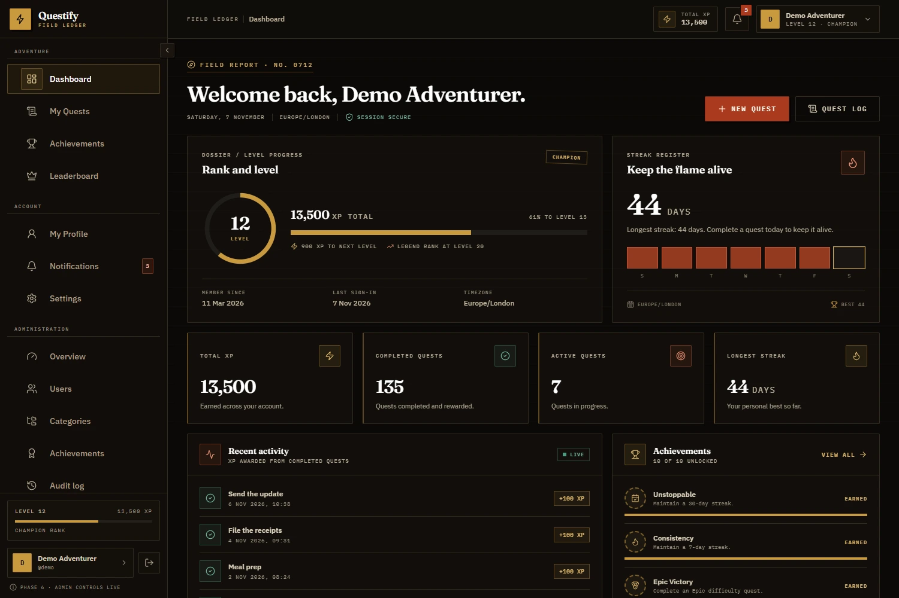
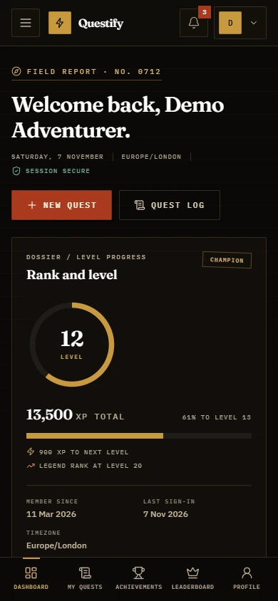

Quests that fit real life
Create one-off or daily, weekly, and monthly quests. Pick a difficulty and Questify assigns the XP on the server — never from the browser.
Expedition ledger · Vol. I
Questify is a full-stack productivity platform where everyday tasks become quests. Complete them to earn XP, level up, unlock achievements, and keep your streak alive — with privacy and security designed in from the first migration.

This is a static showcase. GitHub Pages serves the project page only — the working app is a PHP 8.2 + MySQL application you can run locally or host on any PHP-capable server.
The system
Not cheap dopamine. A clear loop of quest, reward, and visible progress — built to keep you moving after the novelty wears off.
Create one-off or daily, weekly, and monthly quests. Pick a difficulty and Questify assigns the XP on the server — never from the browser.
Every completion writes an append-only transaction. Levels follow 100 × (level − 1)², and ranks derive from the level.
One qualifying quest per local day, tracked in your timezone. The current streak decays honestly; your personal best is preserved.
Ten typed criteria evaluated inside the quest-completion transaction. Unlocks are idempotent, so re-evaluation never duplicates a badge.
All-time, weekly, and monthly boards with deterministic tie-breaks. Public profiles and leaderboard visibility are independent opt-ins.
Public profiles live at /u/{username} and are opt-in. Hidden, suspended, and unknown accounts all return 404 — no enumeration.
Inside the app
Real screens from the working application, captured with the demo fixture: 135 completed quests, 13,500 XP, and a 44-day streak.
/u/{username}. No email, timezone, quest titles or settings.
Every screen, every size
The authenticated shell adapts from a collapsible desktop sidebar to an off-canvas drawer and a bottom tab bar on mobile. Forms still work without JavaScript; the bundled modules only add previews, counters, and smoother transitions.

Under the hood
No framework and no magic. Explicit routing, thin controllers, services for business rules, and models with prepared SQL for every table.
Front controller, middleware pipeline, PDO prepared statements, and a central error handler that never leaks production traces.
InnoDB and utf8mb4 throughout. Versioned migrations, append-only XP ledger, and transactions with row locks for single-use rewards.
Compiled locally — no CDN. A dark, high-contrast visual system with responsive layouts and reduced-motion support.
ES modules bundled and minified. JavaScript enhances the server-rendered DOM; it is never required to complete a quest.
Full-page transitions and scroll reveals, plus a live admin growth chart backed by a JSON endpoint.
CI runs Composer and npm installs, the asset build, PHP lint, migrations, the unit suite, and all seven HTTP suites against MariaDB.
Security & privacy
Authentication, authorization, and ownership checks are enforced on the server. The same rules are pinned by unit tests and end-to-end suites.
Prepared statements everywhere. Emulation is disabled, so every query is a real server-side prepared statement.
CSRF on every mutation. Session synchroniser tokens rotate after sign-in; POST requests without one are rejected with 419.
Passwords and sessions. bcrypt hashing with transparent rehash, login throttling, hashed session IDs at rest, and idle + absolute expiry.
Ownership-scoped reads and writes. Another user's quest, notification, session, or profile row returns 404 — not a hidden control.
Single-use tokens. Password-reset and email-change tokens are random, hashed at rest, and expire. Remember-me validators rotate on every use.
Security headers and uploads. CSP, frame denial, nosniff, and strict referrer policy. Avatars are validated by content and stored where scripts cannot run.
Admin guardrails. Role checks run before CSRF, self-moderation is blocked, the last administrator cannot be demoted, and privileged actions append to an audit log.
Operation-ready. A production checklist covers HTTPS, least-privilege database users, backups with mysqldump --single-transaction, and tested restores.
Run the real thing
Questify needs PHP 8.2+, MySQL 8 or MariaDB 10.4+, Composer 2, and Node.js 20+.
Point the web server document root at public/ — never the project root.
$ composer install
$ npm install
$ cp .env.example .env
$ php scripts/migrate.php
$ npm run build
$ php -S localhost:8000 -t public scripts/router.phpWindows: use Copy-Item .env.example .env. Then open http://localhost:8000.
Your adventure starts now
Explore the code, run the demo fixture, or read the architecture plan. Questify is MIT licensed and open to inspection.
Static showcase on GitHub Pages · The PHP application ships in the repository.